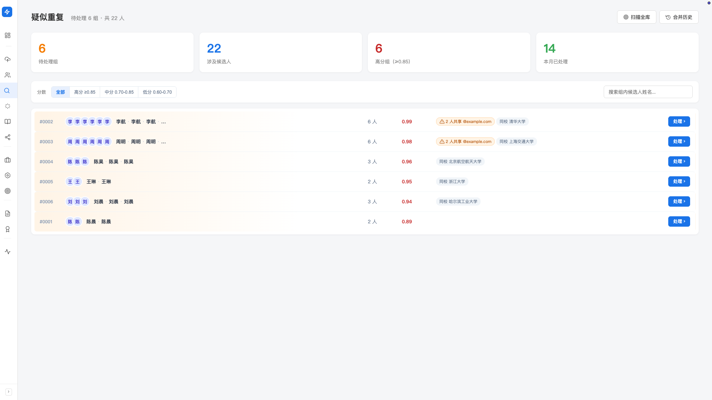
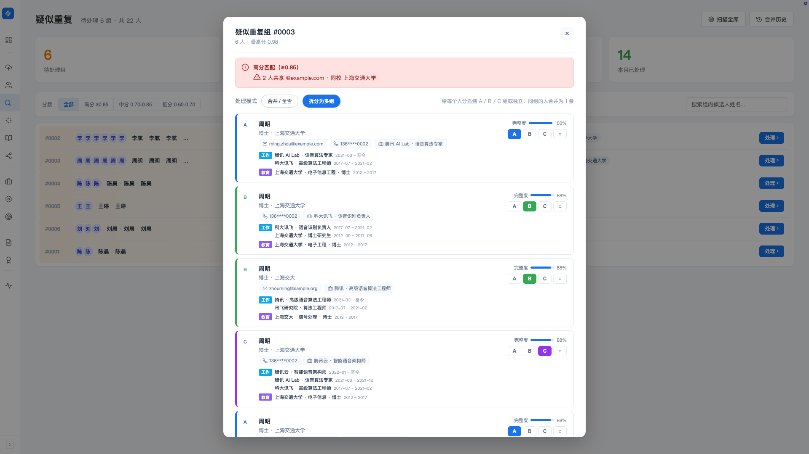

重复候选人发现
候选人投过简历、被同事推过、又在你 Excel 里——同一个人在库里可能有多份记录。 Hunter 在多维度上识别同一人，把「疑似重复」列出来交给你拍板。 本文教你怎么把库里的同人识别、合并、撤销做干净。
产品里对应左侧导航「寻访（找人）」分组下的「疑似重复」（处理）； 「合并历史」（回看与撤销）是「疑似重复」页右上角的一个按钮，点进去查看。 也可以在候选人管理页右上角点「疑似重复」按钮进入。
Hunter 怎么发现重复
Hunter 在多个维度上做加权比对，把可能是同一人的候选人聚成一个「疑似重复组」。 识别维度包括：
- 姓名：含中文/拼音/异形名（如
王晓明和Wang Xiaoming） - 手机/邮箱：硬匹配，命中即为强信号
- 公司/学校：当前与历任公司、教育背景
- 工作经历/教育经历/项目经历：经历越重合，置信度越高
- 论文/专利：作为额外的身份锚点（学术圈/技术圈尤为有用）
所有维度按权重加和，得到一个 0–1 的相似度分数。 分数 ≥ 0.85 算「高分」，几乎可以闭眼合并； 中低分需要你看一眼再决定。
什么时候做去重？
有两种触发方式：
- 自动识别（持续在跑）：每次新简历入库，Hunter 都会与库内候选人做比对， 命中疑似时自动加进「疑似重复」队列。日常你不必特意做任何事。
- 主动扫描全库：在「疑似重复」页右上角点 「扫描全库」按钮，对整个候选人库重新跑一次比对。 一般在你刚做完大批量导入、或半年没去重过时跑一次。
点完「扫描全库」后，页面右上角会出现进度条，扫描在后台跑，你可以离开这个页面去做匹配、做 Mapping。 扫完后页面会出现 banner：「扫描完成：新增 N 条疑似重复建议」。
「疑似重复」页面长什么样
这是日常处理疑似重复的主战场。打开后从上到下：
- 4 个统计卡：待处理组/涉及候选人/高分组（≥0.85）/本月已处理
- 分数筛选：四档分桶—— 全部 · 高分 ≥0.85 · 中分 0.70-0.85 · 低分 0.60-0.70
- 搜索框：按候选人姓名筛组
- 组列表：每个待处理的疑似组一张卡，显示组员、相似度

处理一个疑似组：三选一
点开一个组，弹出处理弹窗。顶部有「处理模式」切换：
- 合并/全否（默认）：这组都是同一人 → 合并；都不是 → 全否
- 拆分为多组：组里实际是 2-3 个人混在一起 → 拆成 A/B/C 子组
合并：这就是同一个人
-
确认成员都是同一人
每张卡片展示候选人的姓名、公司、邮箱、电话、技能、经历等关键信息——人眼快速核对。
-
勾选要合并的成员
卡片默认全部勾选，取消勾选 = 不并入。只保留你确信是同一人的那几条。
-
点「合并为同一人」
不用手动指定主记录——系统会自动以信息最全的那条为基准，把其余记录并入。 合并规则：技能取并集，经历去重，简历追加。 合并后原记录在库里不再独立显示，所有数据都保留在合并后的记录里。
全部不是同一人
看了半天发现这组的成员只是同名或同公司，其实没有一个是同一人——点底部红色的 「全部不是同一人」。 这组从「待处理」消失，未来同样的组合不会再被推送。
拆分：重复人多时
有时候 Hunter 把多个相似的人放进了同一组——比如 5 张卡片里其实是 2 个张三 + 2 个李四 + 1 个独立的人。 这时不应该粗暴合并，也不应该全否，要 拆分。
-
切到「拆分为多组」模式
顶部「处理模式」按钮点一下。
-
给每张卡片指派子组
可选 A/B/C 三个子组（用不同颜色标记），或选 独立（不与任何人合并）。 每张卡片归到哪个子组，由你判断。
-
提交
同子组内的卡片合并成一条；独立的卡片保持原状。一次操作完成多组合并 + 排除。

实践中 3 个子组足够覆盖绝大多数复杂场景。 如果一组里超过 3 个人需要分开，建议先合并你最确定的几个，剩下的让下一轮扫描重新分组。
合并历史与撤销误合并
合并不是不可逆的——任何时候你发现「合错了」，去「合并历史」页面找出来撤销。
合并历史页面
从两个地方进入合并历史：
- 「疑似重复」页右上角的「合并历史」按钮
- 候选人管理页右上角的「合并历史」按钮
页面展示：
- 4 个统计卡：自动合并/用户确认合并/待处理建议/已撤销
- 历史表格：时间/主候选人/操作类型/相似度/操作
- 类型筛选：全部类型/自动合并/确认合并/…
- 搜索：按候选人姓名找历史记录
撤销一次合并
-
在历史表格里找到要撤销的那一行
支持按姓名搜索，按时间倒序排列，最近的合并在最上面。
-
点「详情」
弹出「合并变更详情」弹窗，展示这次合并的时间、主记录、操作类型、相似度、决策层级和来源描述等信息。
-
点底部「撤销此次合并」
撤销后原始记录会重新独立显示在候选人库里，主记录回到合并前的状态。 这次合并在历史里会被标记为已撤销。
合并和撤销都不删除任何数据。即使你合错了又撤回，原始记录里的所有信息都还在。 放心操作。
最佳实践
每周扫一次：高分组（≥0.85）扫一眼合并，速度快；中低分按需处理。 大批量导入后扫一次：新数据进来必然引入新的重复。 小团队按对标行业分工：让某人专门负责 AI 类候选人的去重，避免每个人都看 5 分钟然后看不下去。
同名同公司的不同人在 AI 圈/互联网圈很常见（比如有 N 个张伟在字节）。 合并前花 5 秒看一下手机邮箱有没有冲突，比合错了再撤更省事。
常见提示
候选人量大时初次扫描会比较慢，可能要几分钟。 页面顶部进度条会持续更新；扫完后会有 banner 提示。如果扫描卡住超过 10 分钟没动， 退出页面再回来重新点一次「扫描全库」即可，不会丢数据。
合并规则：技能取并集、经历去重、简历追加； 但某些互斥字段（如当前公司、电话、邮箱）只会保留其中一条的值，不会叠加。 如果合并结果不理想，到「合并历史」撤销即可——原始记录会恢复为独立候选人，可重新处理。